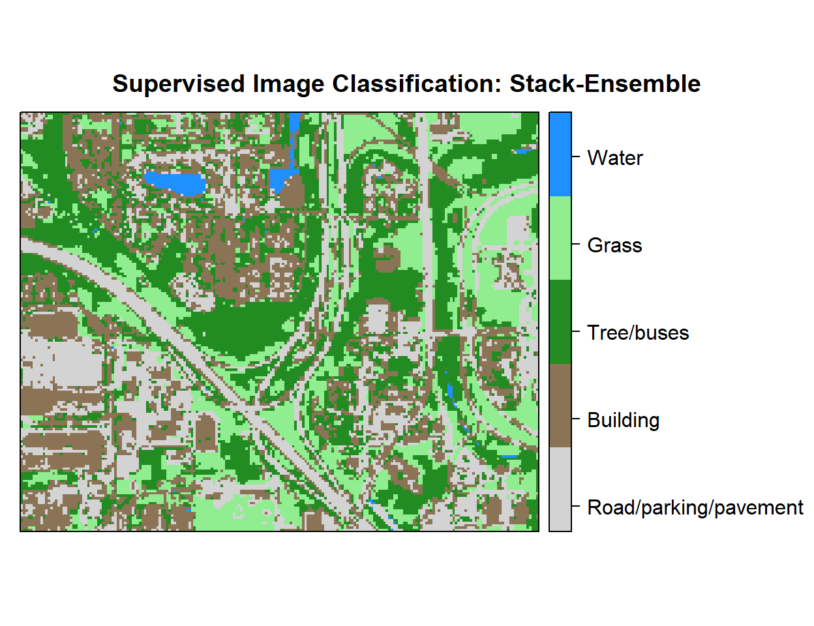

Ensemble machine learning - Supervised Image Classification in H20 R
Ensemble machine learning uses multiple learning algorithms to obtain better predictive performance than could be obtained from any of the constituent learning algorithms. Many of the popular modern machine learning algorithms are ensembles. Stack-generalization usually follows three steps: (1) set up a list of base learners (level-0) and meta-learner (level-1); (2) train each of base learners and performed K-fold cross validation prediction for each base learner; (3) use these predicted values to train the meta-learner and predict new data
In this tutorial will show how to implement a Stack-generalization for pixel based supervised classification of Sentinel-2 multispectral images using the H20 package in R.
First, we will split the “point_data” into a training set (75% of the data), a validation set (12%) and a test set (13%) data. The validation data set will be used to optimize the model parameters during the training process. The model’s performance will be tested with the test data set. Finally, we will predict land use classes using a grid data set.
Load packages
library(rgdal) # spatial data processing
library(raster) # raster processing
library(plyr) # data manipulation
library(dplyr) # data manipulation
library(RStoolbox) # plotting raster data
library(ggplot2) # plotting
library(RColorBrewer) # Color
library(sp) # Spatial data
library(ggplot2) # PlottingThe data could be available for download from here.
# Define data folder
dataFolder<-"D:\\Dropbox\\Spatial Data Analysis and Processing in R\\DATA_RS_DNN\\"Load point and grid data
point<-read.csv(paste0(dataFolder,".\\Sentinel_2\\point_data.csv"), header = T)
grid<-read.csv(paste0(dataFolder,".\\Sentinel_2\\prediction_grid_data.csv"), header = T)Creat data frames
point.data<-cbind(point[c(3:13)])
grid.data<-grid[c(4:13)]
grid.xy<-grid[c(3,1:2)]Install H2O
#install.packages("h20")Start and Initialize H20 local cluster
library(h2o)
localH2o <- h2o.init(nthreads = -1) Import data to H2O cluster
df<- as.h2o(point.data)
grid<- as.h2o(grid.data)Split data into train, validation and test dataset
splits <- h2o.splitFrame(df, c(0.75,0.125), seed=1234)
train <- h2o.assign(splits[[1]], "train.hex") # 75%
valid <- h2o.assign(splits[[2]], "valid.hex") # 12%
test <- h2o.assign(splits[[3]], "test.hex") # 13%Create response and features data sets
y <- "Class"
x <- setdiff(names(train), y)Random Forest
TRandom forests is an ensemble of multiple iterations of decision trees, which become a major data analysis tool. Each tree is made by bootstrapping of the original data set which allows for robust error estimation with the remaining test set, the so-called Out-Of-Bag (OOB) sample. The excluded OOB samples are predicted from the bootstrap samples and by combining the OOB predictions from all trees. The RF algorithm can outperform linear regression (Hengl et al., 2015), and unlike linear regression, RF has no requirements considering the form of the probability density function of the target variable (Kuhn and Johnson, 2013). One major disadvantage of RF is that it is difficult to interpret the relationships between the response and predictor variables. However, RF allows estimation of the importance of variables as measured by the mean decrease in prediction accuracy before and after permuting out-of-bag (OOB) variables. The difference between the two is then averaged over all trees and normalized by the standard deviation of the differences.
# Hyper-parameter
drf_hyper_params <-list(
ntrees = seq(10, 5000, by = 10),
max_depth=c(10,20,30,40,50),
sample_rate=c(0.7, 0.8, 0.9, 1.0)
)
# Serach criteria
drf_search_criteria <- list(strategy = "RandomDiscrete",
max_models = 200,
max_runtime_secs = 900,
stopping_tolerance = 0.001,
stopping_rounds = 2,
seed = 1345767)
# Grid Search
drf_grid <- h2o.grid(
algorithm="randomForest",
grid_id = "drf_grid_ID",
x= x,
y = y,
training_frame = train,
validation_frame =valid,
stopping_metric = "logloss",
nfolds=10,
keep_cross_validation_predictions = TRUE,
hyper_params = drf_hyper_params,
search_criteria = drf_search_criteria,
seed = 42)DRF Grid parameters
# RF Grid parameters
drf_get_grid <- h2o.getGrid("drf_grid_ID",sort_by="logloss",decreasing=FALSE)
drf_get_grid@summary_table[1,]The Best DRF Model
best_drf <- h2o.getModel(drf_get_grid@model_ids[[1]]) Gradient Boosting Machine (GBM)
Gradient Boosting Machine (for Regression and Classification) is a forward learning ensemble method. The guiding heuristic is that good predictive results can be obtained through increasingly refined approximations. H2O’s GBM sequentially builds regression trees on all the features of the dataset in a fully distributed way - each tree is built in parallel.
# Hyper-parameter
gbm_hyper_params = list( ntrees = c(100,500, 1000),
max_depth = seq(1,20),
min_rows = c(1,5,10,20,50,100),
learn_rate = seq(0.001,0.01,0.001),
sample_rate = seq(0.3,1,0.05),
col_sample_rate = seq(0.3,1,0.05),
col_sample_rate_per_tree = seq(0.3,1,0.05))
# Serach criteria
gbm_search_criteria <- list(strategy = "RandomDiscrete",
max_models = 200,
max_runtime_secs = 900,
stopping_tolerance = 0.001,
stopping_rounds = 2,
seed = 1345767)
# Grid Search
gbm_grid <- h2o.grid(
algorithm="gbm",
grid_id = "GBM_grid_IDx",
x= x,
y = y,
training_frame = train,
validation_frame =valid,
stopping_metric = "logloss",
nfolds=10,
hyper_params = gbm_hyper_params,
keep_cross_validation_predictions = TRUE,
search_criteria = gbm_search_criteria,
seed = 42)gbm_get_grid<- h2o.getGrid("GBM_grid_IDx",sort_by="logloss",decreasing=FALSE)gbm_get_grid@summary_table[1,]## Hyper-Parameter Search Summary: ordered by increasing logloss
## col_sample_rate col_sample_rate_per_tree learn_rate max_depth min_rows
## 1 0.6 0.75 0.007 10 5.0
## ntrees sample_rate model_ids logloss
## 1 1000 0.5 GBM_grid_IDx_model_2 0.0023132631150400147The Best GBM Model
best_gbm <- h2o.getModel(gbm_get_grid@model_ids[[1]]) ## model with lowest loglossDeep Neural Network (DNN)
The DNN is based on a multi-layer feedforward artificial neural network (ANN) that is trained with stochastic gradient descent using backpropagation. The network may contain many hidden layers consisting of neurons with activation functions. Advanced features such as adaptive learning rate, rate annealing, momentum training, dropout, L1 or L2 regularization, check-pointing, and grid search enable the technique to achieve high predictive accuracy. Each compute node trains a copy of the global model parameters on its local data with multi-threading (asynchronously) and contributes periodically to the global model via model averaging across the network.
# Hyper-prameter
dnn_hyper_params <- list(
activation = c("Rectifier",
"Maxout",
"Tanh",
"RectifierWithDropout",
"MaxoutWithDropout",
"TanhWithDropout"),
hidden = list(c(5, 5, 5, 5, 5), c(10, 10, 10, 10),
c(50, 50, 50), c(100, 100, 100)),
epochs = c(50, 100, 200),
l1 = c(0, 0.00001, 0.0001),
l2 = c(0, 0.00001, 0.0001),
rate = c(0, 01, 0.005, 0.001),
rate_annealing = c(1e-8, 1e-7, 1e-6),
rho = c(0.9, 0.95, 0.99, 0.999),
epsilon = c(1e-10, 1e-8, 1e-6, 1e-4),
momentum_start = c(0, 0.5),
momentum_stable = c(0.99, 0.5, 0),
input_dropout_ratio = c(0, 0.1, 0.2),
max_w2 = c(10, 100, 1000, 3.4028235e+38)
)
# serach criteris
dnn_search_criteria <- list(strategy = "RandomDiscrete",
max_models = 200,
max_runtime_secs = 900,
stopping_tolerance = 0.001,
stopping_rounds = 2,
seed = 1345767)
# Grid search
DNN_grid <- h2o.grid(
algorithm="deeplearning",
grid_id = "DNN_grid_ID",
x= x,
y = y,
training_frame = train,
validation_frame =valid,
stopping_metric = "logloss",
nfolds=10,
keep_cross_validation_predictions = TRUE,
hyper_params = dnn_hyper_params,
search_criteria = dnn_search_criteria,
seed = 42)DNN Grid parameters
# RF Grid parameters
dnn_get_grid <- h2o.getGrid("DNN_grid_ID",sort_by="logloss",decreasing=FALSE)
dnn_get_grid@summary_table[1,]The Best DNN Model
best_dnn <- h2o.getModel(dnn_get_grid@model_ids[[1]]) Stack-Ensemble
# model parmeters
stack_ensemble <- h2o.stackedEnsemble(
model_id = "stack_ID",
x= x,
y = y,
training_frame = train,
validation_frame =valid,
base_models = list(best_drf,
best_dnn,
best_gbm),
metalearner_algorithm = "AUTO",
metalearner_nfolds = 10,
seed=123)Model performance with Test data set
drf.perf<-h2o.performance(best_drf, newdata=test) ## full test data
gbm.perf<-h2o.performance(best_gbm, newdata=test) ## full test data
dnn.perf<-h2o.performance(best_dnn, newdata=test) ## full test data
ensemble.perf<-h2o.performance(stack_ensemble, newdata=test) ## full test dataMean per_class_error
cat('RF Error:',h2o.mean_per_class_error(drf.perf), '\n')
cat('GBM Error:',h2o.mean_per_class_error(gbm.perf), '\n')
cat('DNN Error:',h2o.mean_per_class_error(dnn.perf), '\n')
cat('Ensmeble Error:',h2o.mean_per_class_error(ensemble.perf), '\n') Log Loss
cat('RF Log-loss:',h2o.logloss(drf.perf), '\n')
cat('GBM Log-lossr:',h2o.logloss(gbm.perf), '\n')
cat('DNN Log-loss:',h2o.logloss(dnn.perf), '\n')
cat('Ensmeble Log-loss:',h2o.logloss(ensemble.perf), '\n') Grid Prediction
g.predict = as.data.frame(h2o.predict(object = stack_ensemble, newdata = grid))Stop h20 cluster
h2o.shutdown(prompt=FALSE)## [1] TRUEExtract Prediction Class
# Extract predicted landuse class
grid.xy$Class<-g.predict$predict
# Import lnaduse ID file
ID<-read.csv(paste0(dataFolder,".\\Sentinel_2\\Landuse_ID.csv"), header=T)
# Join landuse ID
grid.new<-join(grid.xy, ID, by="Class", type="inner")
# Omit missing values
grid.new.na<-na.omit(grid.new) Convert to raster and write
x<-SpatialPointsDataFrame(as.data.frame(grid.new.na)[, c("x", "y")], data = grid.new.na)
r <- rasterFromXYZ(as.data.frame(x)[, c("x", "y", "Class_ID")])Plot map
# Create color palette
myPalette <- colorRampPalette(c("light grey","burlywood4", "forestgreen","light green", "dodgerblue"))
# Plot Map
LU<-spplot(r,"Class_ID", main="Supervised Image Classification: Stack-Ensemble" ,
colorkey = list(space="right",tick.number=1,height=1, width=1.5,
labels = list(at = seq(1,4.8,length=5),cex=1.0,
lab = c("Road/parking/pavement" ,"Building", "Tree/buses", "Grass", "Water"))),
col.regions=myPalette,cut=4)
LU
Write raster
# writeRaster(r, filename = paste0(dataFolder,".\\Sentinel_2\\DNN_H20_Landuse.tiff"), "GTiff", overwrite=T)rm(list = ls())